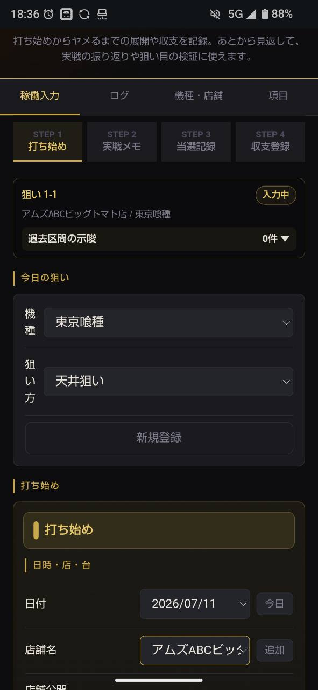
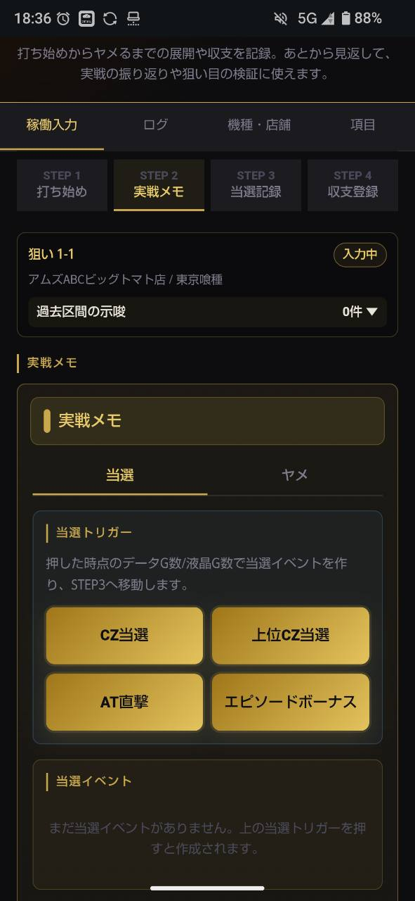
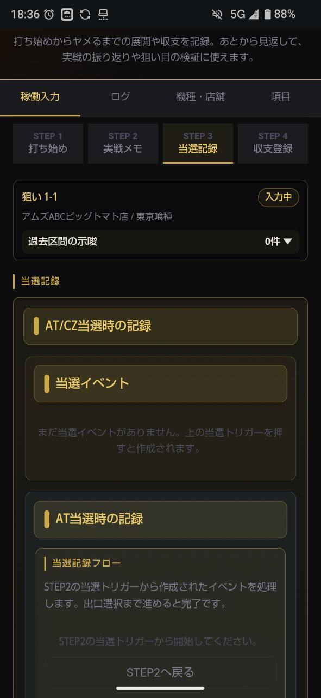
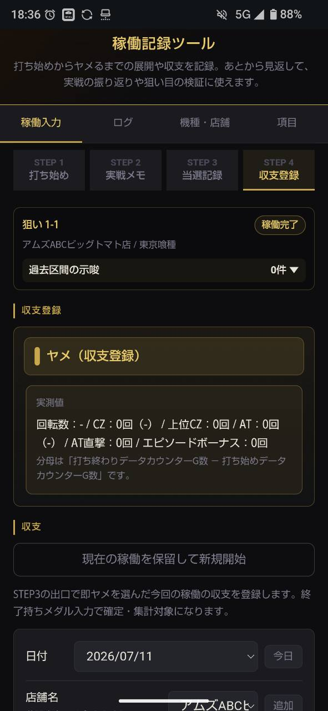

このツールでできること
稼働記録ツールは、パチスロ実戦中の「なんとなくの立ち回り」を、あとから見返せる記録に変えるためのツールです。
打ち始めた理由、途中の挙動、当選までの流れ、ヤメた理由、最終的な収支を、4つのSTEPに分けて残せます。
記録した内容はログとして保存され、狙い目ごとに展開を振り返れます。勝ち負けだけでなく、「その台を打つ判断が妥当だったか」を確認するための実戦ノートとして使う想定です。
登録は不要で、無料で使えます。入力データは利用中の端末のブラウザ内に保存され、サーバーには送信されません。
基本の流れ：4つのSTEP
1. 打ち始め
最初に、今日の狙いを選びます。機種、狙い方、日付、店舗名、台番号、開始時点のゲーム数などを入力します。
任意で「想定期待値」も入力できます。外部の期待値表や自分の基準を参考に、打ち始め時点の概算値を残す欄です。

2. 実戦メモ
打ちながら、小役、ゾーン中の挙動、気になった演出などを記録します。
東京喰種では、スイカ加算、ステージ、アイキャッチ、招待状などの示唆をタグからワンタップで残せます。その他の機種では、タイムラインメモとして自由に記録できます。

3. 当選記録
CZ当選、上位CZ当選、AT直撃、エピソードボーナスなど、当選につながるイベントを記録します。
当選後は、同じ狙い目を続けるか、狙い目を変更して続けるか、ヤメて収支登録へ進むかを選びます。この出口選択によって、記録の区切りが整理されます。

4. 収支登録
ヤメたあとに、終了持ちメダル、現金投入、稼働時間などを入力して収支を確定します。
公開用メモと非公開メモは任意です。店名や台番号は、公開出力に含めるかどうかを選べます。

記録の考え方：狙い目と区切り
1回の稼働の中には、「天井狙い」「リセット狙い」のような目的単位があります。このツールでは、それを狙い目として扱います。
狙い方は、打つべきかを判定する基準ではなく、あとで稼働を振り返るための意図分類です。具体的な狙い目基準や参照値は、機種ごとの解析情報を確認してください。
さらに、1つの狙い目の中で、CZ当選、AT終了、フォロー終了などの節目ごとに区切りができます。
画面に出る「狙い1-2」のような番号は、狙い目と区切りを表すラベルです。番号はツールが自動で振るため、手入力する必要はありません。
メモのタグ付け
公開メモや非公開メモに #タグ 形式で書いておくと、将来の分析ツールで検索・集計しやすくなります。例：#朝一 #据え置き確認
稼働記録ツール本体には検索機能を入れず、JSONエクスポートに含まれるメモを別ツールで分析する想定です。
想定期待値の使い方
打ち始め時に、任意で想定期待値を入力できます。外部の期待値表、自分の過去データ、店舗状況などを見て、「この台を打つ判断の前提」を数字で残すための欄です。
ツールが期待値を計算するわけではなく、あくまで自分で調べた概算値を記録するものです。実際の数値は設定状況や結果によって異なります。
入力した想定期待値は、狙い目の見出し、稼働カード、日付グループに表示されます。日付ごとの合計を見ることで、「今日は期待値をいくら積めたか」を振り返れます。
この機能は、出玉の結果を強調するためではなく、判断の質を振り返るためのものです。結果が荒れた日でも、打つ前の根拠を記録しておくと、あとから検証しやすくなります。
途中でやめる・別の台に移る
実戦中に別の台へ移る場合は、「現在の稼働を保留して新規開始」を使います。保留した稼働は、次回開いたときに「前回の続きから入力する」か「新しい稼働を始める」かを選べます。
前回の続きから入力する場合、店舗名・機種名・台番号はロックされます。これは、別の台の記録が同じ稼働に混ざるのを防ぐためです。
新しい稼働を始めても、前回の記録は自動で削除されません。必要な場合はログから確認できます。
からくり2の復活時の記録
Lからくりサーカス2で復活前に終了画面やボイスが出た場合は、実戦メモの「示唆記録」からその都度記録してください。
当選記録フローには、最終終了時の終了画面・ボイスだけを入力します。復活そのものは時系列タグ「復活」で残せます。
からくり2のCZ終了画面
CZ終了画面は、機械仕掛けの女神終了時・幕間チャンス終了時・運命の一劇終了時のPUSHで確認します。
公式の開発こぼれ話では、鳴海や勝などの弱めの示唆後100G以内に関する法則も示されています。解釈は実戦・解析待ちのため、記録時はCZ終了画面とその後の挙動を分けて残してください。
データの管理
入力データは、利用している端末のブラウザ内に保存されます。サーバーには送信されません。
同じ端末・同じブラウザであれば、ページを閉じても次回続きから再開できます。ただし、ブラウザの閲覧データを削除すると、保存データも消える場合があります。
機種変更やブラウザ変更の前には、ログ画面の「全データをJSONでバックアップ」からバックアップを取ってください。復元欄からJSONファイルを読み込むと、保存済みデータを戻せます。
機種プリセットの参考情報元
本ツールの機種プリセットは以下の解析情報を参考にしています。最新・詳細な解析は各サイトをご確認ください。
Lからくりサーカス2
参照値メモ：天井狙いは液晶1200Gまたは実890GでCZ、等価460G〜/5.6枚530G〜（AT後）が旧プリセットの参照値です。スルー狙いはCZ女神4スルー後5回目AT＋成功濃厚激情、3スルー＋中ハマりからを旧参照値としていました。リセット狙いは変更後に液晶天井500Gへ短縮、等価100G〜/5.6枚140G〜が旧参照値です。
L南国育ちSPECIAL
モンキーターンV
よくある質問
Q. 東京喰種以外でも使えますか？
A. 収支・実戦メモの記録として利用できます。東京喰種は示唆やエンディングカード集計まで用意していますが、他機種でも機種名や狙い方を登録すれば、基本の記録フローは使えます。
Q. データは外部に送られますか？
A. 送られません。データは端末内のlocalStorageに保存されます。別端末で使う場合は、JSONバックアップを使って移してください。
Q. 途中でブラウザを閉じたらどうなりますか？
A. 入力途中の下書きは自動保存されます。次回開いたときに、前回の続きから再開できます。
Q. 間違えて記録した場合は？
A. ログ画面の編集ボタンから、保存済みログを修正できます。修正後は、再度収支登録まで進めると反映されます。
注意事項
本ツールは、実戦内容を整理し、あとから振り返るための記録補助ツールです。
想定期待値や示唆の集計は、入力した情報をもとに表示される目安であり、出玉、収支、勝利、特定の結果を保証するものではありません。
実際の遊技は、各店舗のルールを守り、自己判断で行ってください。
パチスロは適度に楽しむ遊びです。のめり込みや使いすぎには注意し、無理のない範囲で遊技してください。